Автономный двухполярный импульсный источник питания с выходным напряжением -5 В и +5 В
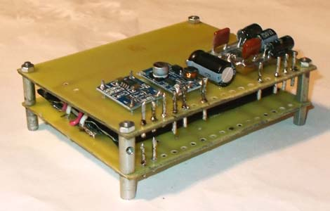
1. Введение
В последнее десятилетие весьма популярным автономным источником питания электронных приборов и схем стала литиевая батарея с выходным напряжением 3.7 В. В некоторых случаях электронную схему можно запитать от батареи напрямую [1] или через понижающий линейный стабилизатор, в частности, когда используется напряжение питания +3.3 В относительно общего провода. Для другого стандартного уровня напряжения +5 В необходимо применение повышающего импульсного преобразователя [5]. Электронные схемы могут состоять из цифровой части с однополярным источником и аналоговой, для которой может потребоваться двухполярное питание. Его часто выполняют посредством создания искусственной средней точки (например, +2.5 В при общем напряжении источника +5 В [3]). При этом могут возникать проблемы одновременного сопряжения прибора или электронной схемы с входом USB компьютера, для которого нужны однополярные сигналы относительно корпуса, и внешними измерительными приборами, зачастую работающими в двухполярном режиме (вольтметр, осциллограф). Поэтому в некоторых случаях двухполярное питание (например, +5 В относительно общего провода) является более предпочтительным [4].
2. Назначение
Автономный двухполярный источник питания разработан для использования в составе различных приборов, в частности, магнитометров [2 - 4], при проведении опытов и исследований в полевых условиях, для оперативного запитывания вновь конструируемых электронных узлов.
3. Конструкция
Схема электрическая принципиальная автономного источника питания с выходным напряжением -5 В и +5 В приведена на рис. 3.1. Первичным источником питания является литий-ионная аккумуляторная батарея B1 напряжением 3.7 В, периодически подзаряжаемая через контроллер заряда от подключаемого к клемме B1+ внешнего зарядного устройства, в качестве которого может использоваться стандартное зарядное устройство для мобильных телефонов, смартфонов или планшетов с выходным напряжением +5 В. Жестких требований к габаритным размерам и конструкции батареи нет. Для получения напряжения +5 В служит импульсный повышающий преобразователь DC-DC на интегральной микросхеме CE8301 с катушкой индуктивности L1, включение которого осуществляется подсоединением клеммы IN+ к клемме B2+. Конденсаторы C1 и C2 выполняют роль фильтра и повышают нагрузочную способность преобразователя в импульсных режимах включения нагрузок. Инвертор на микросхеме LM2662 и конденсаторах C1 - C5 позволяет получать из положительного напряжения примерно равное по модулю отрицательное выходное напряжение при достаточно большом выходном токе (примерно до 100 ... 200 мА).
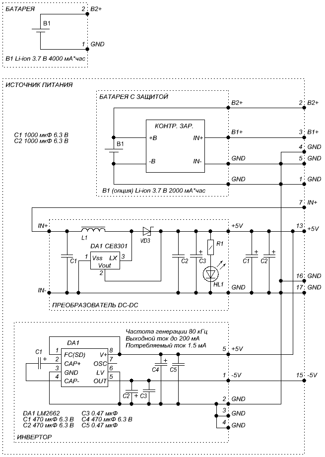
Рис. 3.1. Схема электрическая принципиальная автономного источника питания с выходным напряжением -5 В и +5 В.
В зависимости от емкости (и размеров) аккумуляторной батареи автономный источник питания может быть собран на одной или двух идентичных печатных платах. Если используется аккумуляторная батарея небольшой емкости (примерно до 2000 мА ∙ часов), то и она и остальные узлы (контроллер заряда, импульсный повышающий преобразователь, инвертор) монтируются на одной печатной плате. Если требуется батарея большой емкости, то она монтируется на отдельной печатной плате, а остальные узлы - на другой печатной плате. Эскизы и внешний вид печатных плат показан на рис. 3.2 - 3.6.
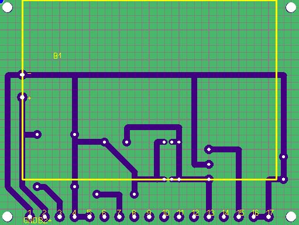
Рис. 3.2. Эскиз печатной платы автономного источника питания с батареей большой емкости B1 без дополнительных узлов. Односторонний фольгированный стеклотекстолит толщиной 1.5 мм. Размер платы 100 х 75 мм2.
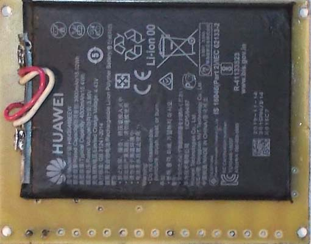
Рис. 3.3. Внешний вид печатной платы автономного источника питания с литий-ионной батареей емкостью 4000 мА
∙ часов (15.4 Вт ∙ час) без дополнительных узлов.
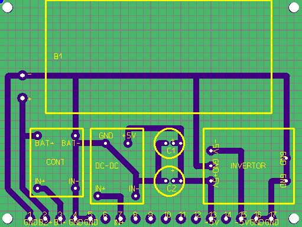
Рис. 3.4. Эскиз печатной платы автономного источника питания с батареей малой емкости B1 (или без нее) и с прочими узлами (контроллер заряда аккумуляторной батареи - CONT, импульсный повышающий преобразователь с выходным напряжением +5 В - DC-DC, импульсный инвертор с выходным напряжением -5 В - INVERTOR). Односторонний фольгированный стеклотекстолит толщиной 1.5 мм. Размер платы 100 х 75 мм2.
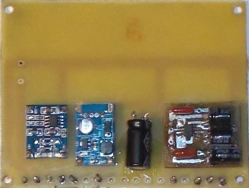
Рис. 3.5. Внешний вид печатной платы автономного источника питания без батареи и с дополнительными узлами (контроллер заряда аккумуляторной батареи, импульсный повышающий преобразователь с выходным напряжением +5 В, импульсный инвертор с выходным напряжением -5 В).
Рис. 3.6. Внешний вид печатной платы автономного источника питания с литий-ионной батареей емкостью 2000 мА
∙ часов (7.4 Вт ∙ час) и с прочими узлами (контроллер заряда аккумуляторной батареи, импульсный повышающий преобразователь с выходным напряжением +5 В, импульсный инвертор с выходным напряжением -5 В).Внешний вид автономного источника питания с аккумуляторной батареей большой емкости (4000 мА ∙ часов, 15.4 Вт ∙ час) на двух печатных платах в сборе приведен на рис. 3.7.
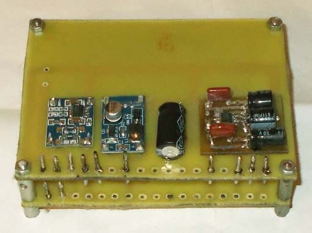
Рис. 3.7. Внешний вид автономного источника питания в сборке из двух печатных плат. Батарея емкостью 4000 мА ∙ часов (15.4 Вт ∙ час) установлена на нижней плате. Прочие узлы (контроллер заряда аккумуляторной батареи, импульсный повышающий преобразователь с выходным напряжением +5 В, импульсный инвертор с выходным напряжением -5 В) установлены на верхней плате.
Представленные выше конструкции выполнены на основе готовых модулей, но также могут быть собраны и из дискретных элементов, являющихся основой данных модулей. Электрические принципиальные схемы соответствующих двухполярных источников питания показаны на рис. 3.8 и 3.9. Различие между ними заключается в использовании разных микросхем DA2 повышающего преобразователя DC-DC. В первом случае используется микросхема CE8301, а во втором - MT3608. Остальные узлы идентичны. Контроллер заряда собран на микросхеме DA1 TP4056 с элементами индикации HL1 и HL2, а инвертор - на микросхеме DA3 LM2662. К выходу инвертора подключен светодиод HL3, сигнализирующий об исправной работе устройства в целом.
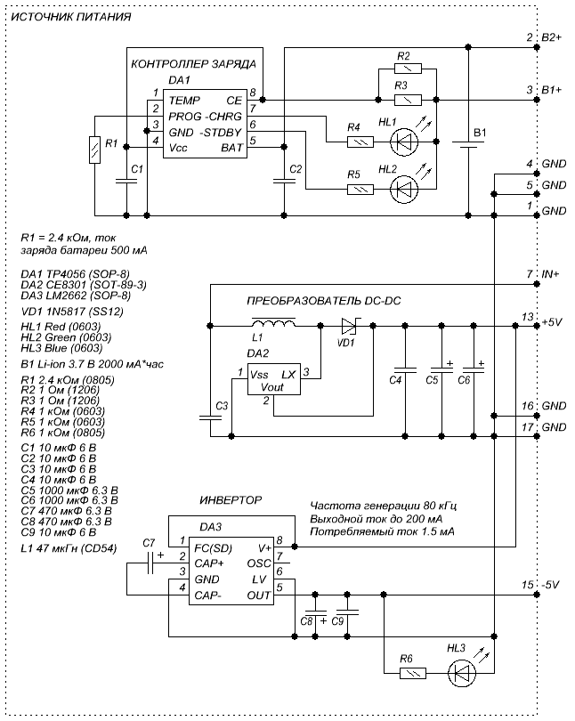
Рис. 3.8. Схема электрическая принципиальная автономного источника питания с выходным напряжением -5 В и +5 В с повышающим преобразователем на основе микросхемы CE8301.
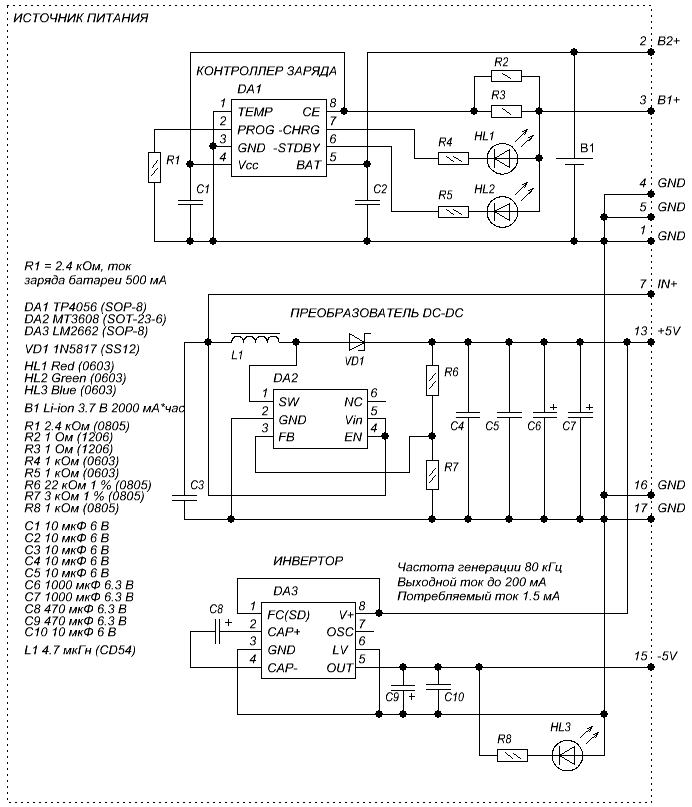
Рис. 3.9. Схема электрическая принципиальная автономного источника питания с выходным напряжением -5 В и +5 В с повышающим преобразователем на основе микросхемы MT3608.
Эскизы и внешний вид печатных плат автономных источников питания с двухполярным выходным напряжением показаны на рис. 3.10 - 3.12.
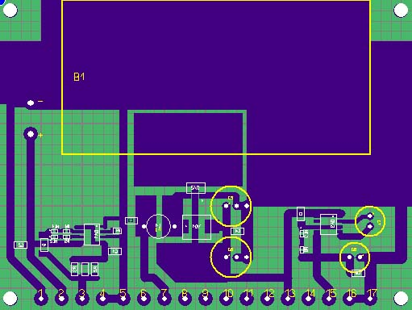
Рис. 3.10. Эскиз печатной платы автономного двухполярного источника питания на дискретных элементах с повышающим преобразователем на основе микросхемы CE8301. Односторонний фольгированный стеклотекстолит толщиной 1.5 мм. Размер платы 100 х 75 мм2.
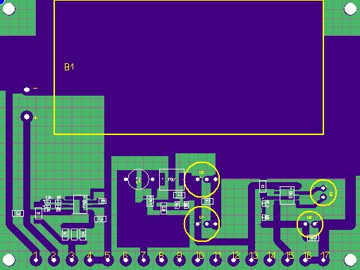
Рис. 3.11. Эскиз печатной платы автономного двухполярного источника питания на дискретных элементах с повышающим преобразователем на основе микросхемы MT3608. Односторонний фольгированный стеклотекстолит толщиной 1.5 мм. Размер платы 100 х 75 мм2.
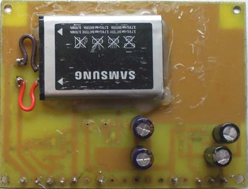
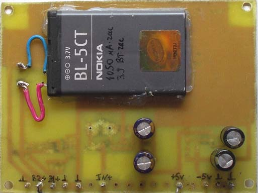
Рис. 3.12. Внешний вид печатных плат двух типов автономного двухполярного источника питания с выходным напряжением -5 В и +5 В на дискретных элементах.
4. Технические данные:
5. Испытания
Зависимость тока, потребляемого от аккумуляторной батареи, от тока нагрузки канала +5 В (фактически, от суммарного тока нагрузки обоих каналов) показана на рис. 5.1. Измерения тока проводились с помощью мультиметров DT830B и DT832 в режиме амперметров на диапазоне 10 А.
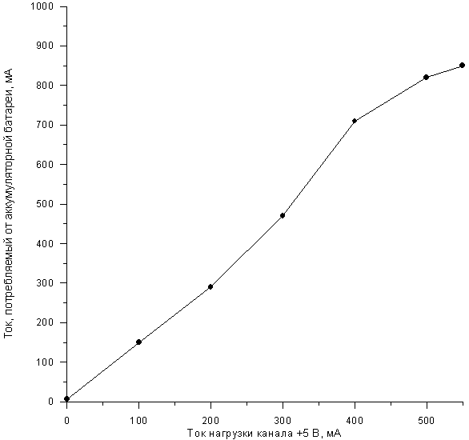
Рис. 5.1. Зависимость тока потребления от аккумуляторной батареи от тока нагрузки канала +5 В.
Зависимость выходного напряжения каналов от тока нагрузки показана на рис. 5.2, 5.3. Измерение выходного напряжение осуществлялось с помощью мультиметра DT832 в режиме вольтметра на диапазоне 20 В, а тока нагрузки с помощью мультиметра DT830B в режиме амперметра на диапазонах 10 А и 200 мА.
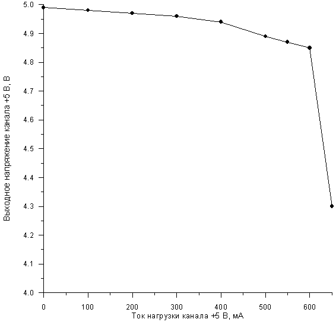
Рис. 5.2. Зависимость выходного напряжения канала +5 В от тока нагрузки (нагрузка по каналу -5 В отсутствует).
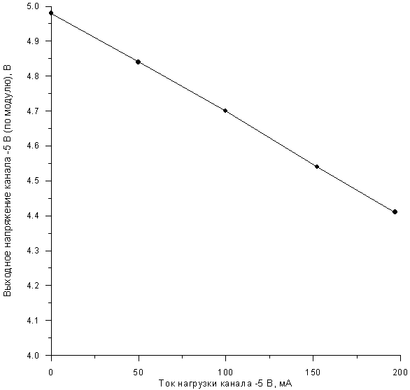
Рис. 5.3. Зависимость выходного напряжения канала -5 В от тока нагрузки (нагрузка по каналу +5 В отсутствует).
Выходное напряжение канала +5 В остается практически постоянным (в пределах 5 % допуска) вплоть до максимальной нагрузки (550 мА), выходное напряжение канала -5 В линейно снижается с увеличением тока нагрузки. В соответствии с графиками рис. 5.2, 5.3 максимальный суммарный ток нагрузки может составлять 550 и даже 600 мА, но максимальный ток нагрузки канала -5 В желательно по возможности ограничивать величинами 50 ... 100 мА.
На рис. 5.4 показаны осциллограммы переменной составляющей выходного напряжения обоих каналов источника на холостом ходу, а на рис. 5.5 - под одновременной нагрузкой 500 мА для канала +5 В и 50 мА для канала -5 В. Осциллограммы сняты с помощью двухканального осциллографа Instrustar ISDS2062B.
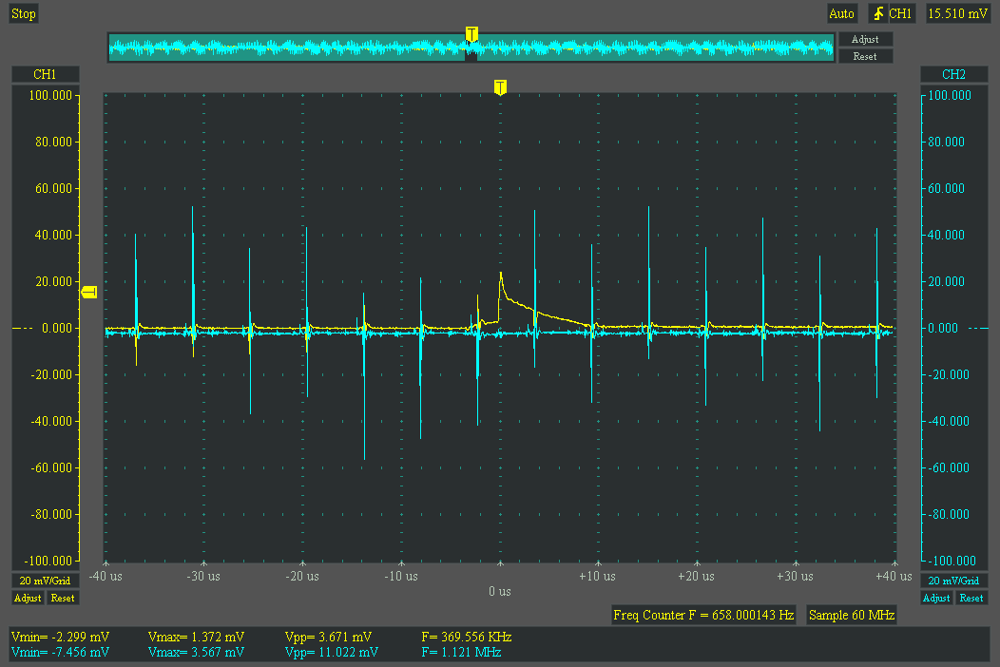
Рис. 5.4. Переменная составляющая напряжения на выходах источника питания (канал +5 В - желтый цвет, канал -5 В - синий цвет) на холостом ходу.
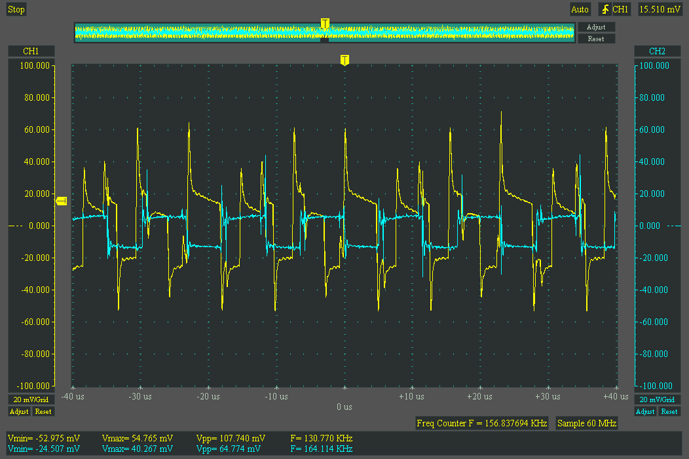
Рис. 5.5. Переменная составляющая напряжения на выходах источника питания (канал +5 В - желтый цвет, канал -5 В - синий цвет) под одновременной нагрузкой (500 мА для канала +5 В и 50 мА для канала -5 В).
На рис. 5.6 показаны спектрограммы переменной составляющей выходного напряжения обоих каналов источника на холостом ходу, а на рис. 5.6 - под одновременной нагрузкой 500 мА для канала +5 В и 50 мА для канала -5 В. Спектрограммы сняты с помощью двухканального осциллографа Instrustar ISDS2062B с использованием фильтра Blackman_Harris.
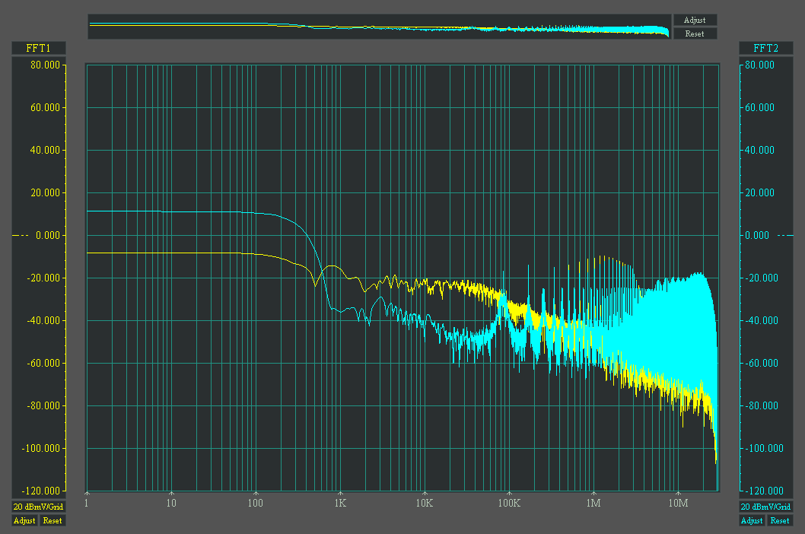
Рис. 5.6. Спектр переменной составляющей напряжения на выходах источника питания (канал +5 В - желтый цвет, канал -5 В - синий цвет) на холостом ходу.
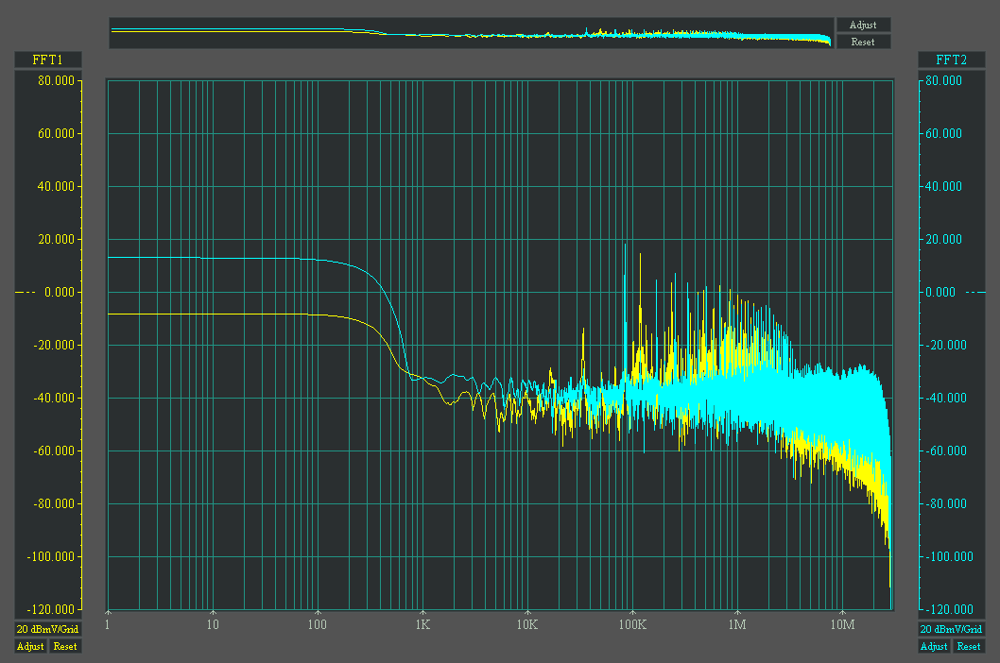
Рис. 5.7. Спектр переменной составляющей напряжения на выходах источника питания (канал +5 В - желтый цвет, канал -5 В - синий цвет) под одновременной нагрузкой (500 мА для канала +5 В и 50 мА для канала -5 В).
6. Заключение
В соответствии с проведенными испытаниями можно сделать вывод, что автономный источник питания вполне возможно применять для приборов, требующих двухполярного питания +5 В. При этом необходимо учитывать, что нагрузочная способность источника существенно выше по каналу положительного напряжения (+5 В), нежели по каналу отрицательного (-5 В). Такой выбор сделан в соответствии с анализом токопотребления двухполярных электронных схем, в которых обычно от источника положительного напряжения потребляется большой ток цифровой частью схемы, а источник отрицательного напряжения служит лишь для обеспечения двухполярного режима работы маломощных операционных усилителей.
Ссылки:
23.12.2020
03.02.2026
Альтернативные источники
энергии
Компьютеры и
Интернет
Магнитные поля
Механотронные системы
Перспективные
разработки
Электроника и технология